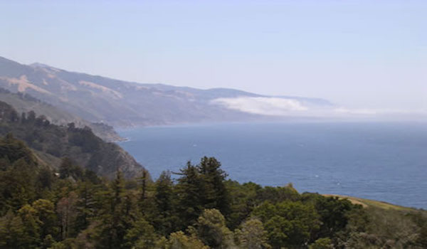
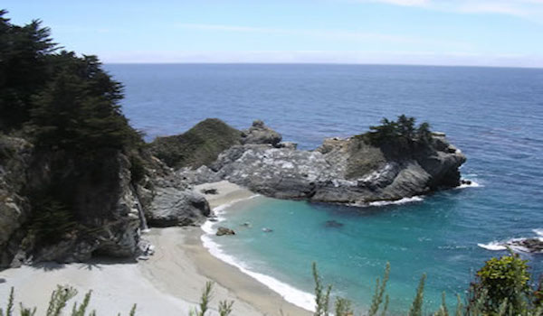
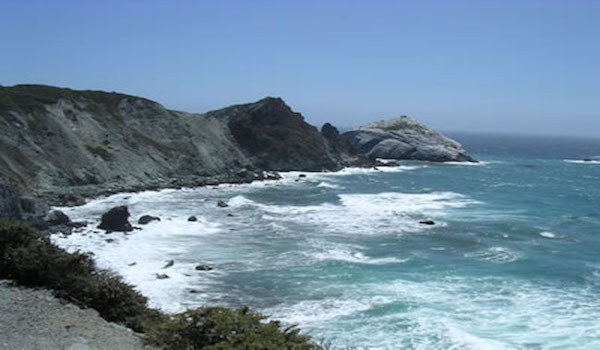

Activities at Pacific Trails
Hiking
Pacific Trails Resort has 5 miles of hiking trails and is adjacent to a state park. Go it alone or join one of our guided hikes.
Kayaking
Ocean kayaks are available for guest use.
Bird Watching
While anytime is a good tine for bird watching at Pacific Trails, we offer guided birdwatching trips at sunrise several times a week.


